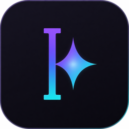
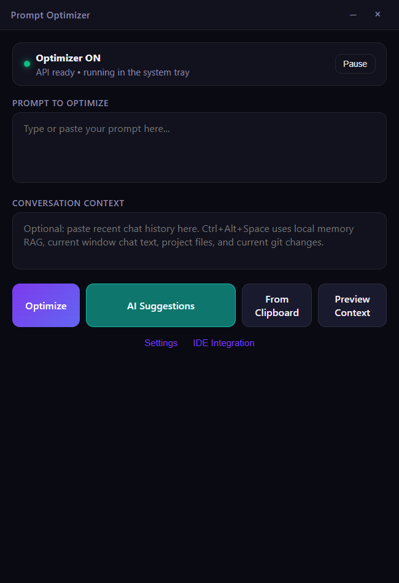
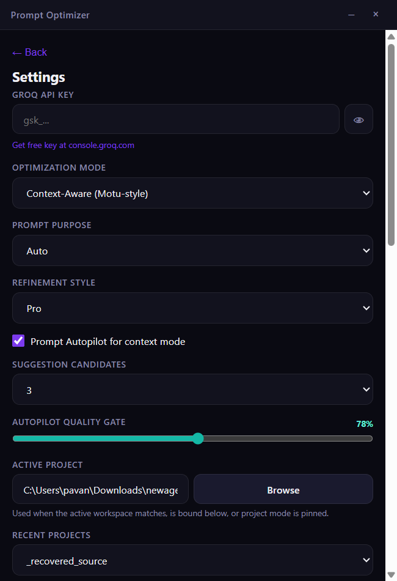

Universal workflow
Optimize the active input from supported Windows applications without breaking concentration.

Prompt OptimizerPRIVATE, WORKSPACE-AWARE AI CONTEXT
Give ChatGPT, Claude, Codex, and browser AI tools the right project context with one shortcut—while keeping unrelated client workspaces isolated by default.
Windows desktop · Local memory · Bring your own model key

THE PRODUCT
Optimize the active input from supported Windows applications without breaking concentration.
Detect the active application and workspace, then retrieve only matching local memory and project context.
Generate diverse candidates, validate them, rank them locally, and use the strongest actionable prompt.
HOW IT WORKS

PRIVACY BY ARCHITECTURE
Cross-workspace memory and history are disabled by default.
Common credentials are removed before indexing or model requests.
Retrieved evidence is delimited, injection-scanned, and prevented from overriding live intent.
Activation counters contain dates and totals—not prompts, files, or model output.
START WITH PROOF
INDIVIDUAL
Test the local workflow with your own provider key.
TEAM PILOT
30 days for up to five developers.
TEAM
Planned managed release after pilot validation.
Pilot pricing is confirmed in writing before payment. Applicable taxes, scope, cancellation, and refund terms are included on the invoice or order form.
FOUNDING PILOT
We are selecting five Windows-based software teams for guided pilots in India and beyond.
Request a 10-minute demoUPI: 8008874541@ybl · Pay only after written pilot confirmation and recipient-name verification.